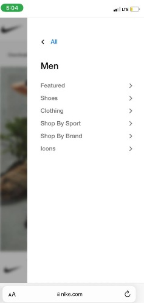
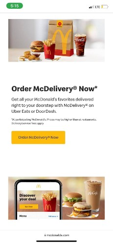

Alignment
Crucial Company
crucial.com
The crucial mobile website is a good example of where alignment is consistenly applied. Every product that is being offered is presented in the middle part of the website along with the header and footer. As well as the articles and awards received by the website. This made it easy to scroll through everything smoothly.
Hick's Law
Nike Company
nike.com
Everything can be easily found and will lessen the time to decide what to purchase when you can just filter out the options that you are looking for. The nike mobile website does a good job with the Hick's Law and will definitely help the user have a great experience browsing and shopping.
Repetition
Mcdonald's Company
mcdonalds.com

All throughout the mobile website and in every picture of the foods and drinks that they are offering, the logo of Mcdonalds is always a part of it. This gives consistency to the design that is being followed which is repetition.